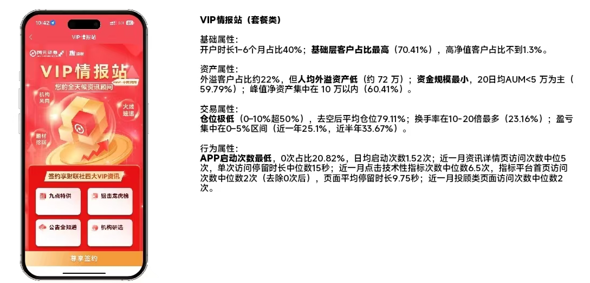
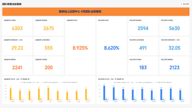
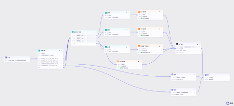
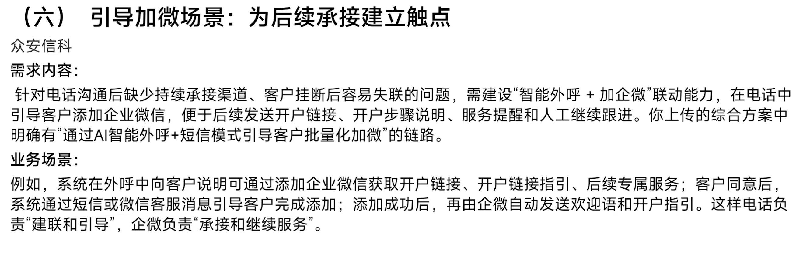
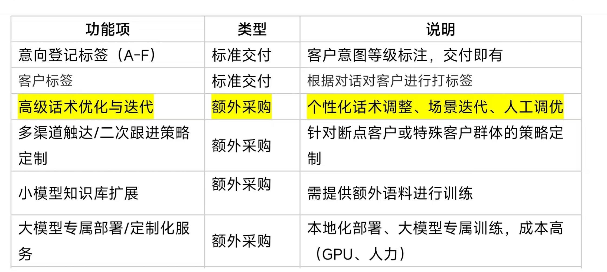

02 / 总部数字金融
数字金融部
国元证券股份有限公司 · 财富管理业务总部
从客户数据出发，把分析转化为经营支持，并进一步参与数字化与智能工具建设。
- 01客户画像与高潜名单
- 02经营分析与看板搭建
- 03AI 质检与知识库
22 家营业部数据赋能
500 万+录音文本字符处理
90%+质检效率提升
数字金融部
从客户数据出发，
把分析转化为经营支持。
在数字金融部期间，我主要围绕客户经营、经营分析和智能工具建设开展工作，通过客户数据识别经营机会，通过指标和看板支持运营管理，并将 AI、知识库和智能工具应用到一线业务流程中。
- 客户数据
- 经营分析
- 数字化工具
- AI 赋能
01 / 核心工作
数据洞察，经营分析，工具落地。
客户画像与高潜名单
围绕重点产品和客户行为数据进行分层分析，识别高潜客群，并将分析结果转化为可直接使用的经营名单。
7 家营业部高潜客户名单支持22 家营业部智能投顾数据赋能约 6000 万元2025 年 7–8 月智能投顾签约资产增长

2025.06 — 2025.08
从客户数据中识别经营机会
- 目标
- 支持线上运营精细化及分支机构客户服务
- 工作内容
- 围绕七款重点产品，梳理持仓、盈亏、APP 活跃度与投顾页面访问等客户行为及账户特征，进行建模与分层分析，识别不同客户群体的行为差异和潜在价值。
- 落地
- 将分析结果转化为可执行名单，为浦东分公司、上海虹桥路营业部、马鞍山营业部等 7 家营业部提供高潜客户名单，并为 22 家营业部智能投顾赋能提供数据支持。
- 结果
- 协助智能投顾在 2025 年 7–8 月期间签约资产约增长 6000 万元。
- 客户数据
- 行为特征
- 分层分析
- 高潜识别
- 名单分发
- 经营触达
把客户数据转化为可执行经营机会。
经营分析与看板搭建
围绕线上运营中心经营管理需求，搭建考核指标体系及日报、周报、月报看板，将人工汇报逐步转化为统一、可持续观察的数据视图。
外呼企微开户转化员工勤勉度

2025.09 — 2026.03
把运营管理问题转化成指标和数据视图
- 目标
- 提升客群线上运营中心转化效率，减轻管理与一线数据整理负担。
- 工作内容
- 搭建客群线上运营中心考核指标体系及日报、周报、月报复盘看板，覆盖外呼、企微、开户转化与员工勤勉度等核心指标，并持续进行业务复盘。
- 价值
- 每日员工排名可以直接发布，减少手动收集和整理数据，让管理者持续观察业务过程并支持运营复盘与问题定位。
- 经营目标
- 指标设计
- 数据汇总
- 可视化看板
- 过程监测
- 业务复盘
把业务管理问题拆成指标、口径、数据、看板与经营动作。
AI 质检与知识库
围绕外呼、企微等高频文本和会话场景，搭建智能质检、知识库和标准话术体系，将非结构化业务内容转化为可识别、可复用的数字化能力。
4 款智能体500 万+录音文本字符4 个月企微记录300+常见问题90%+质检效率提升

2025.09 — 2026.03
把高频业务内容转化为可复用的智能能力
- 目标
- 提升质检覆盖率，减轻一线和管理人员重复工作负担。
- 智能质检
- 搭建 4 款智能体，实现外呼违规风险初检与企微违规风险初检全量覆盖，质检效率提升 90%+。
- 知识沉淀
- 梳理 500 万+ 字符录音文本与 4 个月企微聊天记录，沉淀 300+ 常见问题知识库和标准话术体系，并按月持续更新。
- 进一步落地
- 相关工具进一步部署至合规老师本地终端，用于辅助初检，并保留人工复核。
- 业务文本
- 高频问题
- 风险规则
- 知识沉淀
- 智能初检
- 人工复核
02 / 参与项目建设
从单点工具，进一步参与系统化项目建设
企业微信项目建设
参与企业微信相关业务场景的需求调研，围绕客户服务、客户触达、客户跟进及业务协同等场景，参与业务需求梳理。

智能外呼项目建设
参与客群线上运营中心和浦东分公司的智能外呼需求调研，通过实地业务调研了解不同场景下的外呼需求，为后续方案建设提供业务输入。

03 / 能力沉淀
从数据分析，到数字化建设
- 客户洞察从持仓、行为和活跃数据中识别客户特征与经营机会。
- 经营分析把业务目标拆解成指标、看板和复盘机制。
- AI 应用把大量业务文本转化成知识、规则和辅助判断能力。
- 项目建设从单点分析和工具进一步参与企微、智能外呼等系统化项目需求建设。